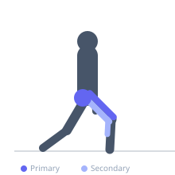

Exercise guide / Plyometric Jump Lunge
Plyometric Jump Lunge
The plyometric jump lunge combines a reverse lunge with a vertical jump, in which the athlete lunges down and then explosively jumps from the lunge position, landing softly back into the same lunge before repeating. Unlike the split jump, the athlete does not switch legs mid-air, making it a true unilateral explosive exercise per leg. It develops single-leg explosive power and lunge-pattern deceleration strength, and is an effective conditioning tool for lower body power endurance.
Primary muscles
rectus femoris
gluteus maximus
Secondary muscles
biceps femoris long head
gastrocnemius medial
iliacus
Stabilizers
gluteus medius
transverse abdominis
Equipment
No Equipment (Bodyweight)


Starting position
- Stand upright with feet together. Step one foot back into a reverse lunge to begin.
Setup
- No equipment required. Non-slip surface with adequate overhead clearance.
Steps
- Step 1: Step into a reverse lunge with the right foot back, lowering until both knees are near 90 degrees.
- Step 2: Drive off the front (left) foot explosively, extending fully through the hip and knee to jump upward.
- Step 3: Land softly back in the same lunge position and absorb through the front leg.
- Step 4: Complete all reps on one leg before switching.
- Step 5: Perform equal reps on each side.
Coaching cues
- Drive off the front foot — not the back
- Land quiet and deep
- Front knee over the toes at all times
Breathing
- Exhale sharply at takeoff. Inhale as you descend into the lunge.
Range of motion
- Full lunge depth — rear knee approaching the floor. Full extension at takeoff.
Tempo
- 6–10 explosive reps per leg for power. Up to 15 for conditioning.
Common mistakes
- Landing with the front knee caving inward
- Insufficient depth — the rear knee should approach the floor
- Using the rear leg to push off — the front leg does the work
Safety
- High demand on the front knee — ensure solid lunge mechanics before adding the jump.
- Progress from walking lunges and reverse lunges before this variation.
Training
- power: 5–8 reps
- endurance: 10–15 reps
- power: 3–4 sets
- endurance: 3–5 sets
- Rest: {'power': 120, 'endurance': 60}